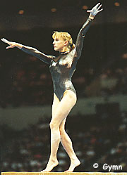

Alyona Polozkova (BLR)
1998 World Cup FX Bronze Medalist
 |
World Cup: 1 Bronze
Alyona was born on August 11, 1979, in Mogilev. She was coached by Nikolai Liskovich at the School of Olympic Reserves in Minsk.
Competition Results
1993
European Youth Olympic Days: 4th AA
Jr. GER-BLR-TCH Meet: 6th AA
1994
USA-BLR-CHN Meet: 10th AA
World Championships (Brisbane): 13th AA
1995
European Youth Olympic Days: 16th AA, 8th B
1996
Catania Cup: 7th AA
ITA-BLR-ROM-RUS Meet: 14th AA
Olympic Games: 6th Team, 25th AA
1997
World Championships: 7th Team, 15th AA
1998
Australia Cup: 5th AA, 4th UB, 5th V, 5th FX, 6th B
Cottbus International: 2nd B, 5th FX, 7th UB
European Championships: 8th Team, 13th AA, 8th V, 9th FX
French International: 4th AA, 1st FX
Glasgow Grand Prix: 3rd B, 4th FX, 7th UB, 8th V
Goodwill Games: 11th AA, 7th V
Sagit Cup: 2nd FX, 5th V
Swiss Cup: 7th FX
World Cup: 3rd FX
1999
Samboo International: 8th B
University Games: 7th AA, 2nd FX
World Championships: 12th Team, 35th AA
Zurich Grand Prix: 7th B
2000
American Cup: 6th AA
European Championships: 15th Team, 20th AA
Olympic Games: 12th Team, 34th AA
RCA Gymnastics Challenge: 2nd AA
This page was created on January 27, 2000 and was
last updated on March 19, 2004.
© Gymn Forum